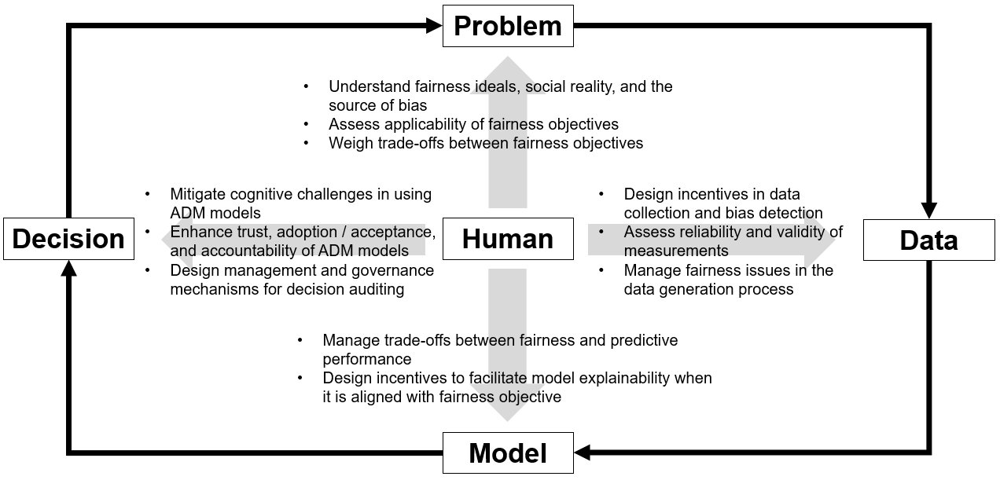

Introduction to Algorithmic Bias and Fairness#
Note: this chapter is adapted from the authors’ own academic publication Adomavicius and Yang [AY22].
As the applications of algorithmic systems in real-world decision-making increase, so do the concerns of its potential biases (or lack of fairness). Some of the most high-profile failures of Responsible AI are related algorithmic bias in high-stake decision-making processes, including, for example:
Racial bias in recidivism risk predictions [ALMK16]: where a risk assessment tool widely used across courts in the U.S. is found to be systematically more inaccurate for black defendents than for white defendents (more specifically, the tool makes more false positive mistakes for black defendents than for white defendents);
Gender bias in automated resume screening [Das18]: where a resume screening system developed by Amazon is shown to disadvantage female candidates;
Racial bias in access to healthcare [OPVM19]: a widely used algorithm used to predict healthcare needs (and subsequently used for healthcare resource allocation) has been found to systematically under-predict the needs of black patients. Given the same predicted risk score, black patients are much sicker than white patients.
Why do these algorithmic biases arise and what can be done about them? In this chapter, we apply the framework introduced in Chapter A Human-Centric Framework of Responsible AI to make sense of the multi-faceted nature of algorithmic bias. This will serve as the conceptual foundation for the next two chapters, which focus on measuring and mitigating algorithmic bias.
Algorithmic Bias as a Socio-Technical System’s Problem#
A critical thing to realize first is that algorithmic bias is not simply a technical issue – reducing it to “errors / imperfections” in the development of algorithms is counterproductive and masks the real problem in most cases. Despite its name, algorithmic bias is a multi-faceted problem that can be attributed to limitations in problem formulation, data (used for training the algorithms), algorithm design, as well as human involvement [ALCT18, AAR19, BP17, RCO+19]. Therefore, to obtain a comprehensive understanding of algorithmic bias, it is essentially to view it as a socio-technical problem. To this end, the Responsible AI framework introduced in Chapter A Human-Centric Framework of Responsible AI, and in particular the inner layer, is highly relevant here. Figure 1 in Adomavicius and Yang [AY22] is an extension of that layer, and can serve as a more specific theoretical framework for algorithmic bias, which we reproduce below.

Defining Fairness in Problem Formulation#
If we want an algorithm to be “fair”, we must clearly specify what we mean by that as part of problem formulation. Defining fairness, as it turns out, is substantially more difficult than it might seem. As should be evident from our discussions in Chapter Philosophical Foundations for Ethical Decision-Making, history is filled with a variety of competing ideals of what it means to be “fair”. For instance:
Equality vs. Equity: Equality literally means treating everyone the same (e.g., during an exam, every student gets the same test, same room, and same time limit). In comparison, Equity means adjusting treatment to different people so that everyone has a fair chance to succeed (e.g., giving some students more support—like providing extra exam time for students with disabilities—so the outcome better reflects effort rather than circumstances).
Equal opportunity vs. Equal outcome: Equal Opportunity is about giving everyone a level playing field even if outcomes differ in the end, whereas Equal outcome is the goal that everyone ends up with the same results (often too much to ask but may make sense for fundamental rights or minimum standards, such as universal literacy education and eradication of infant mortality).
Beside the above philosophical / ideological notions of fairness, there are a few common (and related) definitions of fairness that are often considered in practice.
A common understanding of fairness distinguishes between direct discrimination and indirect discrimination. Direct discrimination occurs when an individual is deliberately treated less favorably than another in a comparable situation due to a protected characteristic [RR14, vZliobaite17]. Here, a comparable situation implies that the two individuals are similar in all relevant aspects except for the protected characteristic, such as gender or race. In contrast, indirect discrimination arises when an “apparently neutral practice puts persons of a protected group at a particular disadvantage compared with others” [vZliobaite17]. In hiring, for instance, selecting a male candidate over a female candidate with equivalent credentials solely because of gender constitutes direct discrimination. On the other hand, favoring candidates from specific regions or neighborhoods (e.g., due to relocation constraints) may lead to race-based indirect discrimination, even if the employer is unaware of the candidates’ races. These two primary types of discrimination may be known by different terms in other fields. For example, in legal contexts, direct discrimination is often referred to as disparate treatment, whereas indirect discrimination is termed disparate impact [BS16].
Another widely discussed fairness concept in economics distinguishes between taste-based discrimination [Bec10] and statistical discrimination [Phe72]. Taste-based discrimination occurs when an employer exhibits a preference for one group of candidates over another based on personal bias. Statistical discrimination, on the other hand, arises when an employer lacks complete information about candidates’ key attributes (e.g., productivity) and consequently relies on group membership as a proxy for these attributes. Importantly, taste-based and statistical discrimination are distinct from direct and indirect discrimination. For example, an employer who deliberately incorporates gender in hiring decisions, thus engaging in direct discrimination, may do so either due to taste-based motives (e.g., a personal preference for a certain gender) or statistical reasoning (e.g., using aggregated performance data across gender groups to inform hiring decisions for an individual).
When building algorithmic systems for decision-making problems, it is not enough to talk about fairness in abstract, conceptual terms. Instead, quantifiable fairness metrics are needed (either as objectives of algorithm design or one of the constraints that an algorithm must satisfy). We elaborate on these metrics and demonstrate how to compute them from data in Chapter Measuring Fairness.
Meanwhile, a fundamental challenge in defining fairness in algorithmic systems is that different fairness objectives can be incompatible with each other, meaning that satisfying one fairness objective would automatically violate another. We illustrate this in Chapter Measuring Fairness using the COMPASS risk assessment case, and refer the readers to another case study on The Limits of Ethical AI.
Data and Measurement#
Data is the “fuel” of algorithms, and the quality of data used to develop models impacts not only their performance but also their fairness properties. When models learn from bias-infused training data, they can inadvertently replicate human biases [Kir16]. Moreover, many algorithmic bias issues stem from discrepancies between certain theoretical constructs (often the focus of fairness considerations) and their measurements [JW21]. We now explore these two closely related challenges: (1) biases in outcome labels and input features used in model development, and (2) biases that emerge due to the misalignment between theoretical constructs of interest and their operationalizations.
Many algorithms used in decision-making are essentially supervised machine learning systems. To build these systems, we need to collect a labeled dataset where both the ground-truth labels and input features are observed. Biases can manifest in labels, features, or intermediate representations through different mechanisms.
First, outcome labels can be biased simply due to an imperfect social reality. For example, it is well established that women are underrepresented in science and mathematics careers [RSZ14] and in C-suite executive positions [JCW07]. Consequently, directly using current employment data as training labels would reinforce existing gender bias. Second, biases can also be encoded in non-sensitive features due to correlations between these features and a protected characteristic (e.g., gender or race). A well-known example is the redlining problem [RR14]. Geographic location is often considered by human employers in hiring decisions due to proximity preferences or relocation restrictions. Because racial distributions vary across neighborhoods, geographic features are likely correlated with race. Thus, even if race (the protected feature in this case) is excluded from the data, discriminatory information remains embedded in geographic features. Moreover, removing geographic features (or other correlated variables) may not fully resolve the issue, as racial information may still be encoded in non-sensitive features through complex (e.g., non-linear) relationships. Third, implicit human biases contribute to biases in (unsupervised) representation learning. Caliskan et al. [CBN17] detected various biases in word embeddings trained on large corpora of text documents. For instance, the word “female” was more strongly associated with “family,” while “male” was more associated with “career.” Using such biased word embeddings as inputs to machine learning models (e.g., recurrent neural networks) can propagate and amplify these biases, leading to problematic outcomes.
In addition, for many real-world decision problems, the targets of fairness considerations are theoretical constructs that cannot be directly observed from data. In the context of hiring, the productivity of candidates is often the basis for making hiring decisions. However, productivity is typically unobservable and must be measured/inferred based on available data of the candidates, such as their academic achievements, past job performances, or responses to screening questions. Bias can arise when there is a mismatch between a theoretical construct and its operationalization. For instance, sizable racial gaps in academic achievements have been shown in prior research [CLV09], and using academic achievements to proxy for productivity can therefore introduce racial biases into hiring decisions.
Algorithm Design#
An emerging body of research, most notably in the computer science discipline, has been devoted to designing AI/ML techniques that not only make accurate predictions but also achieve certain fairness objectives. Chapter Mitigating Algorithmic Bias will demonstrate a few of these approaches, but we provide a higher-level overview here.
A seemingly obvious approach to building fairness-aware models is to simply drop the protected feature, so that the algorithms are blind to the sensitive information. However, this is typically not the best idea for several reasons. First, as mentioned before, other non-protected features in the data can be correlated with the protected feature (i.e., the redlining problem). As a result, dropping the protected feature may not be sufficient to remove the potentially discriminatory information. Second, the protected feature may carry important and legitimate (non-discriminatory) predictive information about the outcome, and dropping it may hurt predictive performance as well as further exacerbate biases. For example, using a college admission dataset, \cite{kleinberg2018algorithmic} show that a race-blind predictor can result in less diversity in admitted students than a race-aware predictor, because the former may produce misleading predictions for minority students.
Despite varying technical details, we characterize fairness-aware modeling techniques according to a few broad types of strategies.
Pre-processing approaches: pre-process input data to reduce bias;
In-processing approaches: modify specific machine learning algorithms to reduce bias, e.g., by incorporating fairness in optimization procedure;
Post-processing approaches: change how predictions are made to reduce bias.
Given this burgeoning field of designing fair algorithms, it might be tempting to think that algorithmic fairness is just a matter of applying the right techniques on the right datasets. However, building fair algorithms in practice faces several very tricky trade-offs.
Perhaps not surprisingly, improved fairness often comes at the cost of predictive performance. Several studies have demonstrated the theoretical trade-offs between model accuracy and fairness. Calders et al. [CKP09] prove a trade-off between predictive accuracy and the level of dependency between predictions and the protected feature (a measure of bias). Corbett-Davies et al. [CDPF+17] show that maximizing predictive accuracy with a single threshold typically violates fairness constraints. Conversely, fairness-preserving models that implement group-specific thresholds often do so at the expense of overall accuracy. The fairness-performance trade-offs present complex incentive challenges for human decision-makers. Strict enforcement of fairness requirements may discourage users of models from investing in improving predictive accuracy. Additionally, these trade-offs pose challenges for policymakers in determining which fairness objectives to prioritize in regulations and how to effectively promote compliance.
Besides performance, fairness may also be at odds with model explanability. Explainability can sometimes conceal bias. Recent work on post-hoc methods to explain the predictions of ML models, such as LIME [RSG16] and SHAP [LL17], has shown that these techniques can be manipulated to produce arbitrary explanations [SHJ+20]. This vulnerability can be exploited to mask algorithmic bias under the guise of explainability. Furthermore, pursuing explainability by developing simpler models may also negatively impact fairness. Kleinberg et al. [KM19] theoretically demonstrate that inequality and stereotyping are inherent in simplistic models (e.g., Decision Trees). Thus, efforts to enhance explainability must carefully consider their implications for fairness and bias mitigation.
Human Involvement in Decision-Making#
Although modern AI/ML models can identify patterns from data and generate predictions, human decision-makers often play a crucial role in interpreting machine outputs and incorporating them into final decisions. In the hiring context, for instance, a predictive model may rank applicants and recommend a shortlist of top candidates for interviews. Human involvement in this “last mile” of decision-making can help mitigate algorithmic bias – such as by manually auditing the model or applying fair practices – but it also introduces several challenges. These challenges stem from cognitive limitations, lack of trust in algorithms, and difficulties in adopting new technology. As a result, decision bias and unfairness may still persist, even if fairness-aware AI/ML techniques successfully address biases before the decision-making stage.
To make final decisions, human decision-makers often need to incorporate model outputs as recommendations. This process can be subject to two distinctive pitfalls. First, human decision-makers’ preferences can be unintentionally influenced by the model’s output. For example, a candidate performing well in an interview may be viewed less favorably simply because they were ranked lower by the algorithm, or vice versa. In other words, the algorithm’s recommendation can act as an anchor that sways subsequent decisions. As a result, if the algorithm produces biased outputs, such biases may be further magnified by the anchoring effect. These “side-effects” of model outputs on human judgment have been demonstrated in the MIS literature. For instance, in the context of recommender systems, system-generated recommendations affect consumers’ preferences [ABCZ13] and willingness to pay for products [ABCZ18]. Second, even if the model is capable of producing fair recommendations, human decision-makers may still reintroduce biases into the final decisions due to a limited understanding of the algorithm’s outputs, lack of trust, or implicit bias in their preferences. For example, [GC19] shows that users of a criminal risk assessment tool fail to effectively incorporate the model’s predictions and deviate from the model in ways that are unfair to black defendants. In the extreme case, if a human decision-maker simply imposes gender- or race-based selection criteria within the shortlist of candidates generated by a fair hiring algorithm, the final hiring decision will still be biased. Therefore, having a fair model does not exempt decision-makers from following ethical standards.
Human decision-makers’ trust (or lack thereof) towards the algorithms can also create problems. Algorithm aversion has been shown in several studies [DB19, DSM15], where humans quickly lose trust in algorithms when they realize that the algorithms are imperfect (though still outperform human experts), and when they choose between relying on the algorithms and themselves [LMM19]. In clinical decision-making, physicians tend to rate advice from AI systems as having lower quality than advice from human experts [GSR+21]. This pattern is concerning because many applications naturally depend on productive collaborations between algorithms and human experts (hiring algorithms and HR managers; recidivism risk prediction algorithms and judges; diagnosis algorithms and physicians; etc.), where trust needs cultivating.
Finally, as algorithms are increasingly being used to make high-stakes decisions, such as medical diagnoses and criminal justice, it is important to design and implement proper management/governance mechanisms to regulate the models’ usage; specifically to clarify accountability (e.g., who is responsible for accidents) and to investigate and overwrite problematic decisions from models if needed [Eli19, SEG+20]. Take the criminal justice system as an example, where many human decision-makers (lawmakers, judges, juries, attorneys, etc.) are collectively involved and take different roles in the system with respect to both the design and usage of algorithm-based risk assessment tools: lawmakers may be responsible for weighing different fairness objectives and setting the legal standards that the risk assessment tools must comply with; judges and juries need to implement due process, e.g., to audit the decisions from the risk assessment tools and offer adjudications to settle fairness-related disputes; and attorneys represent those directly affected by the models (e.g., criminal defendants) and must provide possible recourse or appeal in the decision-making process. All parties work together to take advantage of the models while also managing and governing the models’ decisions when needed.